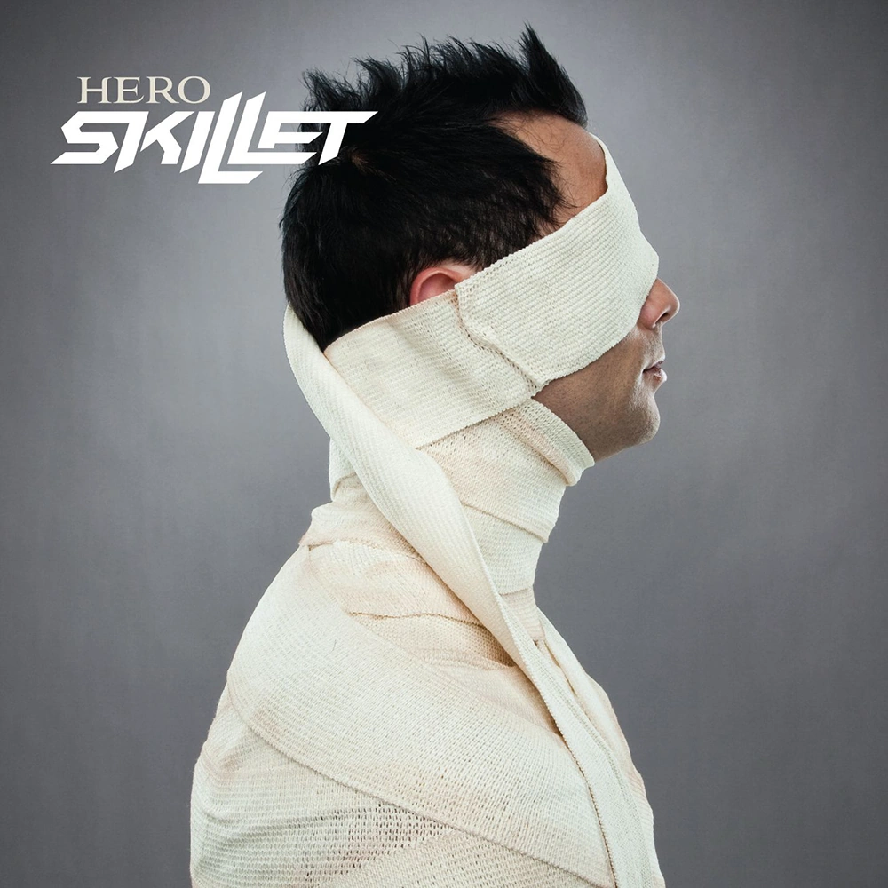
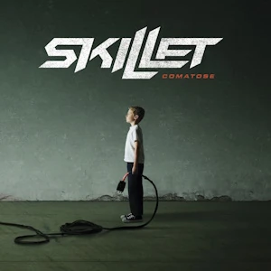
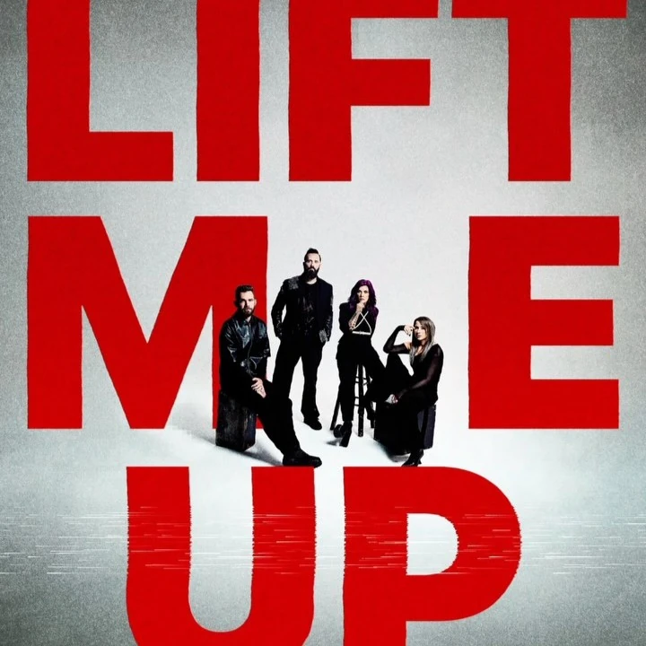
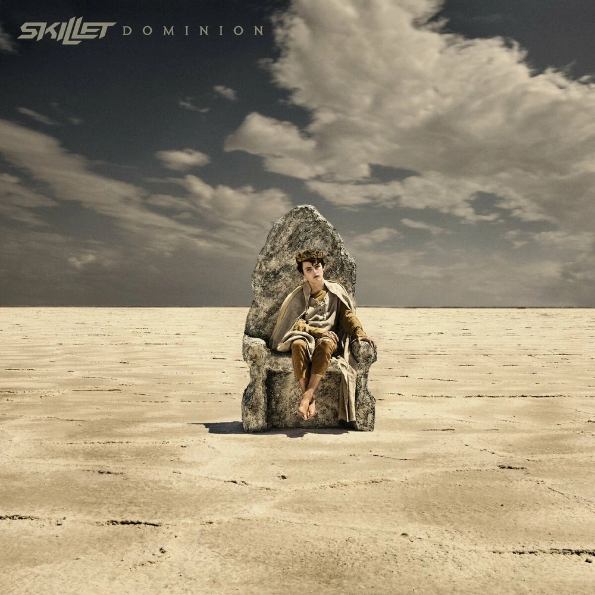

Hero
Hero is the first track and first single from Skillet's seventh studio album Awake. The song was released on May 19, 2009.
Monster
Monster is the second single and second track from American Christian rock band Skillet's seventh studio album Awake. It released on July 14, 2009.

The Resistance
The Resistance is the fifth and final single and the twelfth and final track from American Christian rock band Skillet's ninth studio album Unleashed. It was released on July 26, 2016.
Rise
Rise is the eighth studio album by American Christian rock band Skillet, released on June 25, 2013.
Watching for Comets
Watching for Comets is the tenth track from American Christian rock band Skillet's ninth studio album Unleashed. It released on August 5, 2016.

Comatose
Comatose is the fifth track from American Christian rock band Skillet's sixth studio album Comatose. It released on October 3, 2006.
Breaking Free
Breaking Free is the second promotional single and the thirteenth track from American Christian rock band Skillet's ninth studio album Unleashed's deluxe version. It features American singer Lacey Sturm. It released on November 17, 2017.

Life Me Up
Lift Me Up is the second single and second track from American Christian rock band Skillet's fifth extended play After The Storm. It released on August 14, 2026.

Standing in the Storm
Standing in the Storm is the second single and second track from American Christian rock band Skillet's eleventh album Dominion. It released on November 12, 2021.

Falling inside the Black
Falling Inside the Black is the eighth track from American Christian rock band Skillet's sixth studio album Comatose. It released on October 3, 2006.